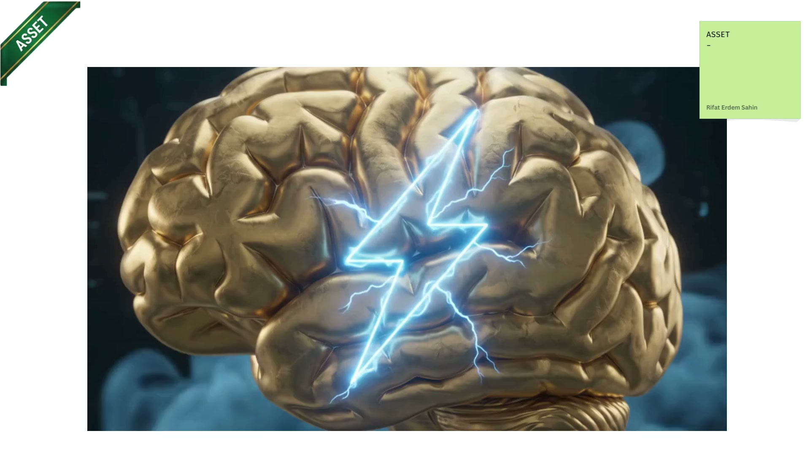

01 · The film
Flagship cut: AI Second Brain, 2:58, six scenes, ~475 words at 140–160 wpm. YouTube + LinkedIn, 1080p.
August 2026 · DeliveryPilot · public WIP
This repo is the workbench for that film: a timed 2:58 script, a shotlist you can edit in the browser, Canva stills, and 26 Google Flow animation clips. I am not publishing a finished YouTube video yet — I am publishing the production itself.

First frame of a Flow clip I generated for the engine / CTA beats. The gold brain is the visual hook for “a second brain that actually works.”
I have ~46,000 notes in Obsidian. Searching them used to feel like a haystack. I built a machine-readable second brain (P.A.R.A. vault, dual agents, live dashboard) so AI can query, update, and apply that knowledge. This video is how I explain that system in under three minutes — then invite people into a free Sunday cohort.
August’s job is to turn the plan into pictures that move. I wrote the flagship script from the Canva deck (nothing invented), reserved Stage 14 for my real WIG story (SRE → agentic operations), and I am now cutting stills and Flow loops against a shotlist with timecode, voiceover, and YouTube structure tags (hook, cold open, B-roll, CTA).
Flagship cut: AI Second Brain, 2:58, six scenes, ~475 words at 140–160 wpm. YouTube + LinkedIn, 1080p.
research.html is the editor: scenes, VO, types, hide/undo, playable Flow clips with first-frame posters.
Canva / production frames live in stills/, one folder per stage. Catalog: images_manifest.json.
26 Google Flow MP4s in video_flow/, renamed from their first frame. Each shot shows the still and the playable loop.
Root holds the pages. Production stills are under stills/ by stage. Animation clips stay in video_flow/.
| Path | What |
|---|---|
index.html | This page |
research.html | Shotlist editor |
timeline.html | Horizontal timeline of the same shots |
shotlist.html | Filter & Sort Table |
scenes.html | Scene Editor |
_script.md | Flagship VO + stage walkthrough |
README.md | Repo map and local run notes |
stills/ | 105 Canva stills, one folder per stage |
video_flow/ | 26 Flow MP4s + first-frame posters |
This is one of the Flow loops — first frame as poster, then play. The rest live on Stage 16 of the shotlist.
server.py; everything else is static. Horizontal timeline shows the same deck as a filmstrip.stills/02_plan/ — Canva deck the flagship script was transcribed from. Full catalog: images_manifest.json.video_flow/ — 26 clips + _first_frames/. Catalog: video_flow_manifest.json.{kind=link}
{kind=link}
{kind=link}
{kind=link}
{kind=link}
{kind=link}
{kind=link}
{kind=link}
{kind=link}
{kind=link}
{kind=link}
{kind=link}
{kind=link}
{kind=link}
{kind=link}
{kind=link}
{kind=link}